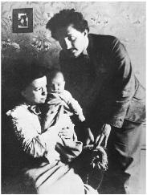
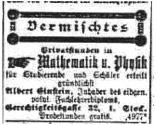
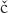

With Mileva and Hans Albert Einstein, 1904
Summer Vacation, 1900
Newly graduated, carrying his Kirchhoff and other physics books, Einstein arrived at the end of July 1900 for his family’s summer vacation in Melchtal, a village nestled in the Swiss Alps between Lake Lucerne and the border with northern Italy. In tow was his “dreadful aunt,” Julia Koch. They were met at the train station by his mother and sister, who smothered him with kisses, and then all piled into a carriage for the ride up the mountain.
As they neared the hotel, Einstein and his sister got off to walk. Maja confided that she had not dared to discuss with their mother his relationship with Mileva Mari , known in the family as “the Dollie affair” after his nickname for her, and she asked him to “go easy on Mama.” It was not in Einstein’s nature, however, “to keep my big mouth shut,” as he later put it in his letter to Mari about the scene, nor was it in his nature to protect Mari’s feelings by sparing her all the dramatic details about what ensued.1
, known in the family as “the Dollie affair” after his nickname for her, and she asked him to “go easy on Mama.” It was not in Einstein’s nature, however, “to keep my big mouth shut,” as he later put it in his letter to Mari about the scene, nor was it in his nature to protect Mari’s feelings by sparing her all the dramatic details about what ensued.1
He went to his mother’s room and, after hearing about his exams, she asked him, “So, what will become of your Dollie now?”
“My wife,” Einstein answered, trying to affect the same nonchalance that his mother had used in her question.
His mother, Einstein recalled, “threw herself on the bed, buried her head in the pillow, and wept like a child.” She was finally able to regain her composure and proceeded to go on the attack. “You are ruining your future and destroying your opportunities,” she said. “No decent family will have her. If she gets pregnant you’ll really be in a mess.”
At that point, it was Einstein’s turn to lose his composure. “I vehemently denied we had been living in sin,” he reported to Mari, “and scolded her roundly.”
Just as he was about to storm out, a friend of his mother’s came in, “a small, vivacious lady, an old hen of the most pleasant variety.” They promptly segued into the requisite small talk: about the weather, the new guests at the spa, the ill-mannered children. Then they went off to eat and play music.
Such periods of storm and calm alternated throughout the vacation. Every now and then, just when Einstein thought that the crisis had receded, his mother would revisit the topic.“Like you, she’s a book, but you ought to have a wife,” she scolded at one point. Another time she brought up the fact that Mari was 24 and he was then only 21. “By the time you’re 30, she’ll be an old witch.”
Einstein’s father, still working back in Milan, weighed in with “a moralistic letter.” The thrust of his parents’ views—at least when applied to the situation of Mileva Mari rather than Marie Winteler—was that a wife was “a luxury” affordable only when a man was making a comfortable living. “I have a low opinion of that view of a relationship between a man and wife,” he told Mari,“because it makes the wife and the prostitute distinguishable only insofar as the former is able to secure a lifelong contract.”2
Over the ensuing months, there would be times when it seemed as if his parents had decided to accept their relationship. “Mama is slowly resigning herself,” Einstein wrote Mari in August. Likewise in September: “They seem to have reconciled themselves to the inevitable. I think they will both come to like you very much once they get to know you.” And once again in October: “My parents have retreated, grudgingly and with hesitation, from the battle of Dollie—now that they have seen that they’ll lose it.”3
But repeatedly, after each period of acceptance, their resistance would flare up anew, randomly leaping into a higher state of frenzy. “Mama often cries bitterly and I don’t have a single moment of peace,” he wrote at the end of August. “My parents weep for me almost as if I had died. Again and again they complain that I have brought misfortune upon myself by my devotion to you. They think you are not healthy.”4
His parents’ dismay had little to do with the fact that Mari was not Jewish, for neither was Marie Winteler, nor that she was Serbian, although that certainly didn’t help her cause. Primarily, it seems, they considered her an unsuitable wife for many of the reasons that some of Einstein’s friends did: she was older, somewhat sickly, had a limp, was plain looking, and was an intense but not a star intellectual.
All of this emotional pressure stoked Einstein’s rebellious instincts and his passion for his “wild street urchin,” as he called her. “Only now do I see how madly in love with you I am!”The relationship, as expressed in their letters, remained equal parts intellectual and emotional, but the emotional part was now filled with a fire unexpected from a self-proclaimed loner. “I just realized that I haven’t been able to kiss you for an entire month, and I long for you so terribly much,” he wrote at one point.
During a quick trip to Zurich in August to check on his job prospects, he found himself walking around in a daze. “Without you, I lack self-confidence, pleasure in my work, pleasure in life—in short, without you my life is not life.” He even tried his hand at a poem for her, which began: “Oh my! That Johnnie boy! / So crazy with desire / While thinking of his Dollie / His pillow catches fire.”5
Their passion, however, was an elevated one, at least in their minds. With the lonely elitism of young German coffeehouse denizens who have read the philosophy of Schopenhauer once too often, they un-abashedly articulated the mystical distinction between their own rarefied spirits and the baser instincts and urges of the masses. “In the case of my parents, as with most people, the senses exercise a direct control over the emotions,” he wrote her amid the family wars of August. “With us, thanks to the fortunate circumstances in which we live, the enjoyment of life is vastly broadened.”
To his credit, Einstein reminded Mari (and himself) that “we mustn’t forget that many existences like my parents’ make our existence possible.” The simple and honest instincts of people like his parents had ensured the progress of civilization. “Thus I am trying to protect my parents without compromising anything that is important to me—and that means you, sweetheart!”
In his attempt to please his mother, Einstein became a charming son at their grand hotel in Melchtal. He found the endless meals excessive and the “overdressed” patrons to be “indolent and pampered,” but he dutifully played his violin for his mother’s friends, made polite conversation, and feigned a cheerful mood. It worked. “My popularity among the guests here and my music successes act as a balm on my mother’s heart.”6
As for his father, Einstein decided that the best way to assuage him, as well as to draw off some of the emotional charge generated by his relationship with Mari, was to visit him back in Milan, tour some of his new power plants, and learn about the family firm “so I can take Papa’s place in an emergency.” Hermann Einstein seemed so pleased that he promised to take his son to Venice after the inspection tour. “I’m leaving for Italy on Saturday to partake of the ‘holy sacraments’ administered by my father, but the valiant Swabian* is not afraid.”
Einstein’s visit with his father went well, for the most part. A distant yet dutiful son, he had fretted mightily about each family financial crisis, perhaps even more than his father did. But business was good for the moment, and that lifted Hermann Einstein’s spirits. “My father is a completely different man now that he has no more financial worries,” Einstein wrote Mari. Only once did the “Dollie affair” intrude enough to make him consider cutting short his visit, but this threat so alarmed his father that Einstein stuck to the original plans. He seemed flattered that his father appreciated both his company and his willingness to pay attention to the family business.7
Even though Einstein occasionally denigrated the idea of being an engineer, it was possible that he could have followed that course at the end of the summer of 1900—especially if, on their trip to Venice, his father had asked him to, or if fate intervened so that he was needed to take his father’s place. He was, after all, a low-ranked graduate of a teaching college without a teaching job, without any research accomplishments, and certainly without academic patrons.
Had he made such a choice in 1900, Einstein would have likely become a good enough engineer, but probably not a great one. Over the ensuing years he would dabble with inventions as a hobby and come up with some good concepts for devices ranging from noiseless refrigerators to a machine that measured very low voltage electricity. But none resulted in a significant engineering breakthrough or marketplace success. Though he would have been a more brilliant engineer than his father or uncle, it is not clear that he would have been any more financially successful.
Among the many surprising things about the life of Albert Einstein was the trouble he had getting an academic job. Indeed, it would be an astonishing nine years after his graduation from the Zurich Polytechnic in 1900—and four years after the miracle year in which he not only upended physics but also finally got a doctoral dissertation accepted—before he would be offered a job as a junior professor.
The delay was not due to a lack of desire on his part. In the middle of August 1900, between his family vacation in Melchtal and his visit to his father in Milan, Einstein stopped back in Zurich to see about getting a post as an assistant to a professor at the Polytechnic. It was typical that each graduate would find, if he wanted, some such role, and Einstein was confident it would happen. In the meantime, he rejected a friend’s offer to help him get a job at an insurance company, dismissing it as “an eight hour day of mindless drudgery.” As he told Mari, “One must avoid stultifying affairs.”8
The problem was that the two physics professors at the Polytechnic were acutely aware of his impudence but not of his genius. Getting a job with Professor Pernet, who had reprimanded him, was not even a consideration. As for Professor Weber, he had developed such an allergy to Einstein that, when no other graduates of the physics and math department were available to become his assistant, he instead hired two students from the engineering division.
That left math professor Adolf Hurwitz. When one of Hurwitz’s assistants got a job teaching at a high school, Einstein exulted to Mari: “This means I will become Hurwitz’s servant, God willing.” Unfortunately, he had skipped most of Hurwitz’s classes, a slight that apparently had not been forgotten.9
By late September, Einstein was still staying with his parents in Milan and had not received an offer. “I plan on going to Zurich on October 1 to talk with Hurwitz personally about the position,” he said. “It’s certainly better than writing.”
While there, he also planned to look for possible tutoring jobs that could tide them over while Mari prepared to retake her final exams. “No matter what happens, we’ll have the most wonderful life in the world. Pleasant work and being together—and what’s more, we now answer to no one, can stand on our own two feet, and enjoy our youth to the utmost. Who could have it any better? When we have scraped together enough money, we can buy bicycles and take a bike tour every couple of weeks.”10
Einstein ended up deciding to write Hurwitz instead of visiting him, which was probably a mistake. His two letters do not stand as models for future generations seeking to learn how to write a job application. He readily conceded that he did not show up at Hurwitz’s calculus classes and was more interested in physics than math. “Since lack of time prevented me from taking part in the mathematics seminar,” he rather lamely said, “there is nothing in my favor except the fact that I attended most of the lectures offered.” Rather presumptuously, he said he was eager for an answer because “the granting of citizenship in Zurich, for which I have applied, has been made conditional upon my proving that I have a permanent job.”11
Einstein’s impatience was matched by his confidence. “Hurwitz still hasn’t written me more,” he said only three days after sending his letter, “but I have hardly any doubt that I will get the position.” He did not. Indeed, he managed to become the only person graduating in his section of the Polytechnic who was not offered a job. “I was suddenly abandoned by everyone,” he later recalled.12
By the end of October 1900 he and Mari were both back in Zurich, where he spent most of his days hanging out at her apartment, reading and writing. On his citizenship application that month, he wrote “none” on the question asking his religion, and for his occupation he wrote, “I am giving private lessons in mathematics until I get a permanent position.”
Throughout that fall, he was able to find only eight sporadic tutoring jobs, and his relatives had ended their financial support. But Einstein put up an optimistic front. “We support ourselves by private lessons, if we can ever pick up some, which is still very doubtful,” he wrote a friend of Mari’s. “Isn’t this a journeyman’s or even a gypsy’s life? But I believe that we will remain cheerful in it as ever.”13 What kept him happy, in addition to Mari’s presence, were the theoretical papers he was writing on his own.
Einstein’s First Published Paper
The first of these papers was on a topic familiar to most school kids: the capillary effect that, among other things, causes water to cling to the side of a straw and curve upward. Although he later called this essay “worthless,” it is interesting from a biographical perspective. Not only is it Einstein’s first published paper, but it shows him heartily embracing an important premise—one not yet fully accepted—that would be at the core of much of his work over the next five years: that molecules (and their constituent atoms) actually exist, and that many natural phenomena can be explained by analyzing how these particles interact with one another.
During his vacation in the summer of 1900, Einstein had been reading the work of Ludwig Boltzmann, who had developed a theory of gases based on the behavior of countless molecules bouncing around. “The Boltzmann is absolutely magnificent,” he enthused to Mari in September. “I am firmly convinced of the correctness of the principles of his theory, i.e., I am convinced that in the case of gases we are really dealing with discrete particles of definite finite size which move according to certain conditions.”14
To understand capillarity, however, required looking at the forces acting between molecules in a liquid, not a gas. Such molecules attract one another, which accounts for the surface tension of a liquid, or the fact that drops hold together, as well as for the capillary effect. Einstein’s idea was that these forces might be analogous to Newton’s gravitational forces, in which two objects are attracted to each other in proportion to their mass and in inverse proportion to their distance from one another.
Einstein looked at whether the capillary effect showed such a relationship to the atomic weight of various liquid substances. He was encouraged, so he decided to see if he could find some experimental data to test the theory further. “The results on capillarity I recently obtained in Zurich seem to be entirely new despite their simplicity,” he wrote Mari. “When we’re back in Zurich we’ll try to get some empirical data on this subject . . . If this yields a law of nature, we’ll send the results to the Annalen.”15
He did end up sending the paper in December 1900 to the Annalen der Physik, Europe’s leading physics journal, which published it the following March. Written without the elegance or verve of his later papers, it conveyed what is at best a tenuous conclusion. “I started from the simple idea of attractive forces among the molecules, and I tested the consequences experimentally,” he wrote. “I took gravitational forces as an analogy.” At the end of the paper, he declares limply, “The question of whether and how our forces are related to gravitational forces must therefore be left completely open for the time being.”16
The paper elicited no comments and contributed nothing to the history of physics. Its basic conjecture was wrong, as the distance dependence is not the same for differing pairs of molecules.17 But it did get him published for the first time. That meant that he now had a printed article to attach to the job-seeking letters with which he was beginning to spam professors all over Europe.
In his letter to Mari, Einstein had used the term “we” when discussing plans to publish the paper. In two letters written the month after it appeared, Einstein referred to “our theory of molecular forces” and “our investigation.”Thus was launched a historical debate over how much credit Mari deserves for helping Einstein devise his theories.
In this case, she mainly seemed to be involved in looking up some data for him to use. His letters conveyed his latest thoughts on molecular forces, but hers contained no substantive science. And in a letter to her best friend, Mari sounded as if she had settled into the role of supportive lover rather than scientific partner. “Albert has written a paper in physics that will probably be published very soon in the Annalen der Physik,” she wrote. “You can imagine how very proud I am of my darling. This is not just an everyday paper, but a very significant one. It deals with the theory of liquids.”18
Jobless Anguish
It had been almost four years since Einstein had renounced his German citizenship, and ever since then he had been stateless. Each month, he put aside some money toward the fee he would need to pay to become a Swiss citizen, a status he deeply desired. One reason was that he admired the Swiss system, its democracy, and its gentle respect for individuals and their privacy. “I like the Swiss because, by and large, they are more humane than the other people among whom I have lived,” he later said.19 There were also practical reasons; in order to work as a civil servant or a teacher in a state school, he would have to be a Swiss citizen.
The Zurich authorities examined him rather thoroughly, and they even sent to Milan for a report on his parents. By February 1901, they were satisfied, and he was made a citizen. He would retain that designation his entire life, even as he accepted citizenships in Germany (again), Austria, and the United States. Indeed, he was so eager to be a Swiss citizen that he put aside his antimilitary sentiments and presented himself, as required, for military service. He was rejected for having sweaty feet (“hyperidrosis ped”), flat feet (“pes planus”), and varicose veins (“varicosis”). The Swiss Army was, apparently, quite discriminating, and so his military service book was stamped “unfit.”20
A few weeks after he got his citizenship, however, his parents insisted that he come back to Milan and live with them. They had decreed, at the end of 1900, that he could not stay in Zurich past Easter unless he got a job there. When Easter came, he was still unemployed.
Mari, not unreasonably, assumed that his summons to Milan was due to his parents’ antipathy toward her. “What utterly depressed me was the fact that our separation had to come about in such an unnatural way, on account of slanders and intrigues,” she wrote her friend. With an absentmindedness he was later to make iconic, Einstein left behind in Zurich his nightshirt, toothbrush, comb, hairbrush (back then he used one), and other toiletries. “Send everything along to my sister,” he instructed Mari, “so she can bring them home with her.” Four days later, he added, “Hold on to my umbrella for the time being. We’ll figure out something to do with it later.”21
Both in Zurich and then in Milan, Einstein churned out job-seeking letters, ever more pleading, to professors around Europe. They were accompanied by his paper on the capillary effect, which proved not particularly impressive; he rarely even received the courtesy of a response. “I will soon have graced every physicist from the North Sea to the southern tip of Italy with my offer,” he wrote Mari.22
By April 1901, Einstein was reduced to buying a pile of postcards with postage-paid reply attachments in the forlorn hope that he would, at least, get an answer. In the two cases where these postcard pleas have survived, they have become, rather amusingly, prized collectors’ items. One of them, to a Dutch professor, is now on display in the Leiden Museum for the History of Science. In both cases, the return-reply attachment was not used; Einstein did not even get the courtesy of a rejection. “I leave no stone unturned and do not give up my sense of humor,” he wrote his friend Marcel Grossmann. “God created the donkey and gave him a thick skin.”23
Among the great scientists Einstein wrote was Wilhelm Ostwald, professor of chemistry in Leipzig, whose contributions to the theory of dilution were to earn him a Nobel Prize. “Your work on general chemistry inspired me to write the enclosed article,” Einstein said. Then flattery turned to plaintiveness as he asked “whether you might have use for a mathematical physicist.” Einstein concluded by pleading: “I am without money, and only a position of this kind would enable me to continue my studies.” He got no answer. Einstein wrote again two weeks later using the pretext “I am not sure whether I included my address” in the earlier letter. “Your judgment of my paper matters very much to me.” There was still no answer.24
Einstein’s father, with whom he was living in Milan, quietly shared his son’s anguish and tried, in a painfully sweet manner, to help. When no answer came after the second letter to Ostwald, Hermann Einstein took it upon himself, without his son’s knowledge, to make an unusual and awkward effort, suffused with heart-wrenching emotion, to prevail upon Ostwald himself:
Please forgive a father who is so bold as to turn to you, esteemed Herr Professor, in the interest of his son. Albert is 22 years old, he studied at the Zurich Polytechnic for four years, and he passed his exam with flying colors last summer. Since then he has been trying unsuccessfully to get a position as a teaching assistant, which would enable him to continue his education in physics. All those in a position to judge praise his talents; I can assure you that he is extraordinarily studious and diligent and clings with great love to his science. He therefore feels profoundly unhappy about his current lack of a job, and he becomes more and more convinced that he has gone off the tracks with his career. In addition, he is oppressed by the thought that he is a burden on us, people of modest means. Since it is you whom my son seems to admire and esteem more than any other scholar in physics, it is you to whom I have taken the liberty of turning with the humble request to read his paper and to write to him, if possible, a few words of encouragement, so that he might recover his joy in living and working. If, in addition, you could secure him an assistant’s position, my gratitude would know no bounds. I beg you to forgive me for my impudence in writing you, and my son does not know anything about my unusual step.25
Ostwald still did not answer. However, in one of history’s nice ironies, he would become, nine years later, the first person to nominate Einstein for the Nobel Prize.
Einstein was convinced that his nemesis at the Zurich Polytechnic, physics professor Heinrich Weber, was behind the difficulties. Having hired two engineers rather than Einstein as his own assistant, he was apparently now giving him unfavorable references. After applying for a job with Göttingen professor Eduard Riecke, Einstein despaired to Mari: “I have more or less given up the position as lost. I cannot believe that Weber would let such a good opportunity pass without doing some mischief.” Mari advised him to write Weber, confronting him directly, and Einstein reported back that he had. “He should at least know that he cannot do these things behind my back. I wrote to him that I know that my appointment now depends on his report alone.”
It didn’t work. Einstein again got turned down. “Riecke’s rejection hasn’t surprised me,” he wrote Mari. “I’m completely convinced that Weber is to blame.” He became so discouraged that, at least for the moment, he felt it futile to continue his search. “Under these circumstances it no longer makes sense to write further to professors, since, should things get far enough along, it is certain they would all enquire with Weber, and he would again give a poor reference.” To Grossmann he lamented, “I could have found a job long ago had it not been for Weber’s underhandedness.”26
To what extent did anti-Semitism play a role? Einstein came to believe that it was a factor, which led him to seek work in Italy, where he felt it was not so pronounced. “One of the main obstacles in getting a position is absent here, namely anti-Semitism, which in German-speaking countries is as unpleasant as it is a hindrance,” he wrote Mari. She, in turn, lamented to her friend about her lover’s difficulties. “You know my sweetheart has a sharp tongue and moreover he is a Jew.”27
In his effort to find work in Italy, Einstein enlisted one of the friends he had made while studying in Zurich, an engineer named Michele Angelo Besso. Like Einstein, Besso was from a middle-class Jewish family that had wandered around Europe and eventually settled in Italy. He was six years older than Einstein, and by the time they met he had already graduated from the Polytechnic and was working for an engineering firm. He and Einstein forged a close friendship that would last for the rest of their lives (they died within weeks of each other in 1955).
Over the years, Besso and Einstein would share both the most intimate personal confidences and the loftiest scientific notions. As Einstein wrote in one of the 229 extant letters they exchanged, “Nobody else is so close to me, nobody knows me so well, nobody is so kindly disposed to me as you are.”28
Besso had a delightful intellect, but he lacked focus, drive, and diligence. Like Einstein, he had once been asked to leave high school because of his insubordinate attitude (he sent a petition complaining about a math teacher). Einstein called Besso “an awful weakling . . . who cannot rouse himself to any action in life or scientific creation, but who has an extraordinarily fine mind whose working, though disorderly, I watch with great delight.”
Einstein had introduced Besso to Anna Winteler of Aarau, Marie’s sister, whom he ended up marrying. By 1901 he had moved to Trieste with her. When Einstein caught up with him, he found Besso as smart, as funny, and as maddeningly unfocused as ever. He had recently been asked by his boss to inspect a power station, and he decided to leave the night before to make sure that he arrived on time. But he missed his train, then failed to get there the next day, and finally arrived on the third day—“but to his horror realizes that he has forgotten what he’s supposed to do.” So he sent a postcard back to the office asking them to resend his instructions. It was the boss’s assessment that Besso was “completely useless and almost unbalanced.”
Einstein’s assessment of Besso was more loving. “Michele is an awful schlemiel,” he reported to Mari, using the Yiddish word for a hapless bumbler. One evening, Besso and Einstein spent almost four hours talking about science, including the properties of the mysterious ether and “the definition of absolute rest.”These ideas would burst into bloom four years later, in the relativity theory that he would devise with Besso as his sounding board. “He’s interested in our research,” Einstein wrote Mari, “though he often misses the big picture by worrying about petty considerations.”
Besso had some connections that could, Einstein hoped, be useful. His uncle was a mathematics professor at the polytechnic in Milan, and Einstein’s plan was to have Besso provide an introduction: “I’ll grab him by the collar and drag him to his uncle, where I’ll do the talking myself.” Besso was able to persuade his uncle to write letters on Einstein’s behalf, but nothing came of the effort. Instead, Einstein spent most of 1901 juggling temporary teaching assignments and some tutoring.29
It was Einstein’s other close friend from Zurich, his classmate and math note-taker Marcel Grossmann, who ended up finally getting Einstein a job, though not one that would have been expected. Just when Einstein was beginning to despair, Grossmann wrote that there was likely to be an opening for an examiner at the Swiss Patent Office, located in Bern. Grossmann’s father knew the director and was willing to recommend Einstein.
“I was deeply moved by your devotion and compassion, which did not let you forget your luckless friend,” Einstein replied. “I would be delighted to get such a nice job and that I would spare no effort to live up to your recommendation.” To Mari he exulted: “Just think what a wonderful job this would be for me! I’ll be mad with joy if something should come of that.”
It would take months, he knew, before the patent-office job would materialize, assuming that it ever did. So he accepted a temporary post at a technical school in Winterthur for two months, filling in for a teacher on military leave. The hours would be long and, worse yet, he would have to teach descriptive geometry, neither then nor later his strongest field. “But the valiant Swabian is not afraid,” he proclaimed, repeating one of his favorite poetic phrases.30
In the meantime, he and Mari would have the chance to take a romantic vacation together, one that would have fateful consequences.
Lake Como, May 1901
“You absolutely must come see me in Como, you little witch,” Einstein wrote Mari at the end of April 1901. “You’ll see for yourself how bright and cheerful I’ve become and how all my brow-knitting is gone.”
The family disputes and frustrating job search had caused him to be snappish, but he promised that was now over. “It was only out of nervousness that I was mean to you,” he apologized. To make it up to her, he proposed that they should have a romantic and sensuous tryst in one of the world’s most romantic and sensuous places: Lake Como, the grandest of the jewel-like Alpine finger lakes high on the border of Italy and Switzerland, where in early May the lush foliage bursts forth under majestic snow-capped peaks.
“Bring my blue dressing-gown so we can wrap ourselves up in it,” he said. “I promise you an outing the likes of which you’ve never seen.”31
Mari quickly accepted, but then changed her mind; she had received a letter from her family in Novi Sad “that robs me of all desire, not only for having fun, but for life itself.” He should make the trip on his own, she sulked.“It seems I can have nothing without being punished.” But the next day she changed her mind again. “I wrote you a little card yesterday while in the worst of moods because of a letter I received. But when I read your letter today I became a bit more cheerful, since I see how much you love me, so I think we’ll take that trip after all.”32
And thus it was that early on the morning of Sunday, May 5, 1901, Albert Einstein was waiting for Mileva Mari at the train station in the village of Como, Italy, “with open arms and a pounding heart.” They spent the day there, admiring its gothic cathedral and walled old town, then took one of the stately white steamers that hop from village to village along the banks of the lake.
They stopped to visit Villa Carlotta, the most luscious of all the famous mansions that dot the shore, with its frescoed ceilings, a version of Antonio Canova’s erotic sculpture Cupid and Psyche, and five hundred species of plants. Mari later wrote a friend how much she admired “the splendid garden, which I preserved in my heart, the more so because we were not allowed to swipe a single flower.”
After spending the night in an inn, they decided to hike through the mountain pass to Switzerland, but found it still covered with up to twenty feet of snow. So they hired a small sleigh,“the kind they use that has just enough room for two people in love with each other, and a coachman stands on a little plank in the rear and prattles all the time and calls you ‘signora,’ ” Mari wrote. “Could you think of anything more beautiful?”
The snow was falling merrily, as far as the eye could see, “so that this cold, white infinity gave me the shivers and I held my sweetheart firmly in my arms under the coats and shawls covering us.” On the way down, they stomped and kicked at the snow to produce little avalanches, “so as to properly scare the world below.”33
A few days later, Einstein recalled “how beautiful it was the last time you let me press your dear little person against me in that most natural way.”34 And in that most natural way, Mileva Mari became pregnant with Albert Einstein’s child.
After returning to Winterthur, where he was a substitute teacher, Einstein wrote Mari a letter that made reference to her pregnancy. Oddly—or perhaps not oddly at all—he began by delving into matters scientific rather than personal.“I just read a wonderful paper by Lenard on the generation of cathode rays by ultraviolet light,” he started. “Under the influence of this beautiful piece I am filled with such happiness and joy that I must share some of it with you.” Einstein would soon revolutionize science by building on Lenard’s paper to produce a theory of light quanta that explained this photoelectric effect. Even so, it is rather surprising, or at least amusing, that when he rhapsodized about sharing “happiness and joy” with his newly pregnant lover, he was referring to a paper on beams of electrons.
Only after this scientific exultation came a brief reference to their expected child, whom Einstein referred to as a boy: “How are you darling? How’s the boy?” He went on to display an odd notion of what parenting would be like: “Can you imagine how pleasant it will be when we’re able to work again, completely undisturbed, and with no one around to tell us what to do!”
Most of all, he tried to be reassuring. He would find a job, he pledged, even if it meant going into the insurance business. They would create a comfortable home together. “Be happy and don’t fret, darling. I won’t leave you and will bring everything to a happy conclusion. You just have to be patient! You will see that my arms are not so bad to rest in, even if things are beginning a little awkwardly.”35
Mari was preparing to retake her graduation exams, and she was hoping to go on to get a doctorate and become a physicist. Both she and her parents had invested enormous amounts, emotionally and financially, in that goal over the years. She could have, if she had wished, terminated her pregnancy. Zurich was then a center of a burgeoning birth control industry, which included a mail-order abortion drug firm based there.
Instead, she decided that she wanted to have Einstein’s child—even though he was not yet ready or willing to marry her. Having a child out of wedlock was rebellious, given their upbringings, but not uncommon. The official statistics for Zurich in 1901 show that 12 percent of births were illegitimate. Residents who were Austro-Hungarian, moreover, were much more likely to get pregnant while unmarried. In southern Hungary, 33 percent of births were illegitimate. Serbs had the highest rate of illegitimate births, Jews by far the lowest.36
The decision caused Einstein to focus on the future. “I will look for a position immediately, no matter how humble it is,” he told her. “My scientific goals and my personal vanity will not prevent me from accepting even the most subordinate position.” He decided to call Besso’s father as well as the director of the local insurance company, and he promised to marry her as soon as he settled into a job. “Then no one can cast a stone on your dear little head.”
The pregnancy could also resolve, or so he hoped, the issues they faced with their families. “When your parents and mine are presented with a fait accompli, they’ll just have to reconcile themselves to it as best they can.”37
Mari, bedridden in Zurich with pregnancy sickness, was thrilled. “So, sweetheart, you want to look for a job immediately? And have me move in with you!” It was a vague proposal, but she immediately pronounced herself “happy” to agree. “Of course it mustn’t involve accepting a really bad position, darling,” she added. “That would make me feel terrible.” At her sister’s suggestion she tried to convince Einstein to visit her parents in Serbia for the summer vacation. “It would make me so happy,” she begged. “And when my parents see the two of us physically in front of them, all their doubts will evaporate.”38
But Einstein, to her dismay, decided to spend the summer vacation again with his mother and sister in the Alps. As a result, he was not there to help and encourage her at the end of July 1901 when she re-took her exams. Perhaps as a consequence of her pregnancy and personal situation, Mileva ended up failing for the second time, once again getting a 4.0 out of 6 and once again being the only one in her group not to pass.
Thus it was that Mileva Mari found herself resigned to giving up her dream of being a scientific scholar. She visited her home in Serbia—alone—and told her parents about her academic failure and her pregnancy. Before leaving, she asked Einstein to send her father a letter describing their plans and, presumably, pledging to marry her. “Will you send me the letter so I can see what you’ve written?” she asked. “By and by I’ll give him the necessary information, the unpleasant news as well.”39
Disputes with Drude and Others
Einstein’s impudence and contempt for convention, traits that were abetted by Mari, were evident in his science as well as in his personal life in 1901. That year, the unemployed enthusiast engaged in a series of tangles with academic authorities.
The squabbles show that Einstein had no qualms about challenging those in power. In fact, it seemed to infuse him with glee. As he proclaimed to Jost Winteler in the midst of his disputes that year, “Blind respect for authority is the greatest enemy of truth.” It would prove a worthy credo, one suitable for being carved on his coat of arms if he had ever wanted such a thing.
His struggles that year also reveal something more subtle about Einstein’s scientific thinking: he had an urge—indeed, a compulsion—to unify concepts from different branches of physics. “It is a glorious feeling to discover the unity of a set of phenomena that seem at first to be completely separate,” he wrote to his friend Grossmann as he embarked that spring on an attempt to tie his work on capillarity to Boltzmann’s theory of gases. That sentence, more than any other, sums up the faith that underlay Einstein’s scientific mission, from his first paper until his last scribbled field equations, guiding him with the same sure sense that was displayed by the needle of his childhood compass.40
Among the potentially unifying concepts that were mesmerizing Einstein, and much of the physics world, were those that sprang from kinetic theory, which had been developed in the late nineteenth century by applying the principles of mechanics to phenomena such as heat transfer and the behavior of gases. This involved regarding a gas, for example, as a collection of a huge number of tiny particles—in this case, molecules made up of one or more atoms—that careen around freely and occasionally collide with one another.
Kinetic theory spurred the growth of statistical mechanics, which describes the behavior of a large number of particles using statistical calculations. It was, of course, impossible to trace each molecule and each collision in a gas, but knowing the statistical behavior gave a workable theory of how billions of molecules behaved under varying conditions.
Scientists proceeded to apply these concepts not only to the behavior of gases, but also to phenomena that occurred in liquids and solids, including electrical conductivity and radiation. “The opportunity arose to apply the methods of the kinetic theory of gases to completely different branches of physics,” Einstein’s close friend Paul Ehrenfest, himself an expert in the field, later wrote.“Above all, the theory was applied to the motion of electrons in metals, to the Brownian motion of microscopically small particles in suspensions, and to the theory of blackbody radiation.”41
Although many scientists were using atomism to explore their own specialties, for Einstein it was a way to make connections, and develop unifying theories, between a variety of disciplines. In April 1901, for example, he adapted the molecular theories he had used to explain the capillary effect in liquids and applied them to the diffusion of gas molecules. “I’ve got an extremely lucky idea, which will make it possible to apply our theory of molecular forces to gases as well,” he wrote Mari. To Grossmann he noted, “I am now convinced that my theory of atomic attractive forces can also be extended to gases.”42
Next he became interested in the conduction of heat and electricity, which led him to study Paul Drude’s electron theory of metals. As the Einstein scholar Jürgen Renn notes, “Drude’s electron theory and Boltzmann’s kinetic theory of gas do not just happen to be two arbitrary subjects of interest to Einstein, but rather they share an important common property with several other of his early research topics: they are two examples of the application of atomistic ideas to physical and chemical problems.”43
Drude’s electron theory posited that there are particles in metal that move freely, as molecules of gas do, and thereby conduct both heat and electricity. When Einstein looked into it, he was pleased with it in parts. “I have a study in my hands by Paul Drude on the electron theory, which is written to my heart’s desire, even though it contains some very sloppy things,” he told Mari. A month later, with his usual lack of deference to authority, he declared, “Perhaps I’ll write to Drude privately to point out his mistakes.”
And so he did. In a letter to Drude in June,Einstein pointed out what he thought were two mistakes.“He will hardly have anything sensible to refute me with,” Einstein gloated to Mari, “because my objections are very straightforward.” Perhaps under the charming illusion that showing an eminent scientist his purported lapses is a good method for getting a job, Einstein included a request for one in his letter.44
Surprisingly, Drude replied. Not surprisingly, he dismissed Einstein’s objections. Einstein was outraged. “It is such manifest proof of the wretchedness of its author that no further comment by me is necessary,” Einstein said when forwarding Drude’s reply to Mari. “From now on I’ll no longer turn to such people, and will instead attack them mercilessly in the journals, as they deserve. It is no wonder that little by little one becomes a misanthrope.”
Einstein also vented his frustration to Jost Winteler, his father figure from Aarau, in a letter that included his declaration about a blind respect for authority being the greatest enemy of truth. “He responds by pointing out that another ‘infallible’ colleague of his shares his opinion. I’ll soon make it hot for the man with a masterly publication.”45
The published papers of Einstein do not identify this “infallible” colleague cited by Drude, but some sleuthing by Renn has turned up a letter from Mari that declares it to be Ludwig Boltzmann.46 That explains why Einstein proceeded to immerse himself in Boltzmann’s writings. “I have been engrossed in Boltzmann’s works on the kinetic theory of gases,” he wrote Grossmann in September, “and these last few days I wrote a short paper myself that provides the missing key-stone in the chain of proofs that he started.”47
Boltzmann, then at the University of Leipzig, was Europe’s master of statistical physics. He had helped to develop the kinetic theory and defend the faith that atoms and molecules actually exist. In doing so, he found it necessary to reconceive the great Second Law of Thermodynamics. This law has many equivalent formulations. It says that heat flows naturally from hot to cold, but not the reverse. Another way to describe the Second Law is in terms of entropy, the degree of disorder and randomness in a system. Any spontaneous process tends to increase the entropy of a system. For example, perfume molecules drift out of an open bottle and into a room but don’t, at least in our common experience, spontaneously gather themselves together and all drift back into the bottle.
The problem for Boltzmann was that mechanical processes, such as molecules bumping around, could each be reversed, according to Newton. So a spontaneous decrease in entropy would, at least in theory, be possible. The absurdity of positing that diffused perfume molecules could gather back into a bottle, or that heat could flow from a cold body to a hot one spontaneously, was flung against Boltzmann by opponents, such as Wilhelm Ostwald, who did not believe in the reality of atoms and molecules. “The proposition that all natural phenomena can ultimately be reduced to mechanical ones cannot even be taken as a useful working hypothesis: it is simply a mistake,” Ostwald declared. “The irreversibility of natural phenomena proves the existence of processes that cannot be described by mechanical equations.”
Boltzmann responded by revising the Second Law so that it was not absolute but merely a statistical near-certainty. It was theoretically possible that millions of perfume molecules could randomly bounce around in a way that they all put themselves back into a bottle at a certain moment, but that was exceedingly unlikely, perhaps trillions of times less likely than that a new deck of cards shuffled a hundred times would end up back in its pristine rank-and-suit precise order.48
When Einstein rather immodestly declared in September 1901 that he was filling in a “keystone” that was missing in Boltzmann’s chain of proofs, he said he planned to publish it soon. But first, he sent a paper to the Annalen der Physik that involved an electrical method for investigating molecular forces, which used calculations derived from experiments others had done using salt solutions and an electrode.49
Then he published his critique of Boltzmann’s theories. He noted that they worked well in explaining heat transfer in gases but had not yet been properly generalized for other realms. “Great as the achievements of the kinetic theory of heat have been in the domain of gas theory,” he wrote, “the science of mechanics has not yet been able to produce an adequate foundation for the general theory of heat.” His aim was “to close this gap.”50
This was all quite presumptuous for an undistinguished Polytechnic student who had not been able to get either a doctorate or a job. Einstein himself later admitted that these papers added little to the body of physics wisdom. But they do indicate what was at the heart of his 1901 challenges to Drude and Boltzmann. Their theories, he felt, did not live up to the maxim he had proclaimed to Grossmann earlier that year about how glorious it was to discover an underlying unity in a set of phenomena that seem completely separate.
In the meantime, in November 1901, Einstein had submitted an attempt at a doctoral dissertation to Professor Alfred Kleiner at the University of Zurich. The dissertation has not survived, but Mari told a friend that “it deals with research into the molecular forces in gases using various known phenomena.” Einstein was confident. “He won’t dare reject my dissertation,” he said of Kleiner, “otherwise the shortsighted man is of little use to me.”51
By December Kleiner had not even responded, and Einstein started worrying that perhaps the professor’s “fragile dignity” might make him uncomfortable accepting a dissertation that denigrated the work of such masters as Drude and Boltzmann. “If he dares to reject my dissertation, then I’ll publish his rejection along with my paper and make a fool of him,” Einstein said. “But if he accepts it, then we’ll see what good old Herr Drude has to say.”
Eager for a resolution, he decided to go see Kleiner personally. Rather surprisingly, the meeting went well. Kleiner admitted he had not yet read the dissertation, and Einstein told him to take his time. They then proceeded to discuss various ideas that Einstein was developing, some of which would eventually bear fruit in his relativity theory. Kleiner promised Einstein that he could count on him for a recommendation the next time a teaching job came up. “He’s not quite as stupid as I’d thought,” was Einstein’s verdict.“Moreover, he’s a good fellow.”52
Kleiner may have been a good fellow, but he did not like Einstein’s dissertation when he finally got around to reading it. In particular, he was unhappy about Einstein’s attack on the scientific establishment. So he rejected it; more precisely, he told Einstein to withdraw it voluntarily, which permitted him to get back his 230 franc fee. According to a book written by Einstein’s stepson-in-law, Kleiner’s action was “out of consideration to his colleague Ludwig Boltzmann, whose train of reasoning Einstein had sharply criticized.” Einstein, lacking such sensitivity, was persuaded by a friend to send the attack directly to Boltzmann.53
Lieserl
Marcel Grossmann had mentioned to Einstein that there was likely to be a job at the patent office for him, but it had not yet materialized. So five months later, he gently reminded Grossmann that he still needed help. Noticing in the newspaper that Grossmann had won a job teaching at a Swiss high school, Einstein expressed his “great joy” and then plaintively added, “I, too, applied for that position, but I did it only so that I wouldn’t have to tell myself that I was too faint-hearted to apply.”54
In the fall of 1901, Einstein took an even humbler job as a tutor at a little private academy in Schaffhausen, a village on the Rhine twenty miles north of Zurich. The work consisted solely of tutoring a rich English schoolboy who was there. To be taught by Einstein would someday seem a bargain at any price. But at the time, the proprietor of the school, Jacob Nüesch, was getting the bargain. He was charging the child’s family 4,000 francs a year, while paying Einstein only 150 francs a month, plus providing room and board.
Einstein continued to promise Mari that she would “get a good husband as soon as this becomes feasible,” but he was now despairing about the patent job. “The position in Bern has not yet been advertised so that I am really giving up hope for it.”55
Mari was eager to be with him, but her pregnancy made it impossible for them to be together in public. So she spent most of November at a small hotel in a neighboring village. Their relationship was becoming strained. Despite her pleas, Einstein came only infrequently to visit her, often claiming that he did not have the spare money. “You’ll surely surprise me, right?” she begged after getting yet another note canceling a visit. Her pleadings and anger alternated, often in the same letter:
If you only knew how terribly homesick I am, you would surely come. Are you really out of money? That’s nice! The man earns 150 francs, has room and board provided, and at the end of the month doesn’t have a cent to his name! ... Don’t use that as an excuse for Sunday, please. If you don’t get any money by then, I will send you some . . . If you only knew how much I want to see you again! I think about you all day long, and even more at night.56
Einstein’s impatience with authority soon pitted him against the proprietor of the academy. He tried to cajole his tutee to move to Bern with him and pay him directly, but the boy’s mother balked. Then Einstein asked Nüesch to give him his meal money in cash so that he would not have to eat with his family. “You know what our conditions are,” Nüesch replied. “There is no reason to deviate from them.”
A surly Einstein threatened to find new arrangements, and Nüesch backed down in a rage. In a line that could be considered yet another maxim for his life, Einstein recounted the scene to Mari and exulted, “Long live impudence! It is my guardian angel in this world.”
That night, as he sat down for his last meal at the Nüesch household, he found a letter for him next to his soup plate. It was from his real-life guardian angel, Marcel Grossmann. The position at the patent office, Grossmann wrote, was about to be advertised, and Einstein was sure to get it. Their lives were soon to be “brilliantly changed for the better,” an excited Einstein wrote Mari. “I’m dizzy with joy when I think about it,” he said. “I’m even happier for you than for myself. Together we’d surely be the happiest people on the earth.”
That still left the issue of what to do about their baby, who was due to be born in less than two months, by early February 1902. “The only problem that would remain to be solved would be how to keep our Lieserl with us,” Einstein (who had begun referring to their unborn child as a girl) wrote to Mari, who had returned home to have the baby at her parents’ house in Novi Sad. “I wouldn’t want to have to give her up.” It was a noble intention on his part, yet he knew that it would be difficult for him to show up for work in Bern with an illegitimate child. “Ask your Papa; he’s an experienced man, and knows the world better than your overworked, impractical Johnnie.” For good measure, he declared that the baby, when born, “shouldn’t be stuffed with cow milk, because it might make her stupid.” Mari’s milk would be more nourishing, he said.57
Although he was willing to consult Mari’s family, Einstein had no intention of letting his own family know that his mother’s worst fears about his relationship—a pregnancy and possible marriage—were materializing. His sister seemed to realize that he and Mari were secretly planning to be married, and she told this to members of the Winteler family in Aarau. But none of them showed any sign of suspecting that a child was involved. Einstein’s mother learned about the purported engagement from Mrs. Winteler. “We are resolutely against Albert’s relationship with Fraulein Mari, and we don’t ever wish to have anything to do with her,” Pauline Einstein lamented.58
Einstein’s mother even took the extraordinary step of writing a nasty letter, signed also by her husband, to Mari’s parents. “This lady,” Mari lamented to a friend about Einstein’s mother, “seems to have set as her life’s goal to embitter as much as possible not only my life but also that of her son. I could not have thought it possible that there could exist such heartless and outright wicked people! They felt no compunctions about writing a letter to my parents in which they reviled me in a manner that was a disgrace.”59
The official advertisement announcing the patent office opportunity finally appeared in December 1901. The director, Friedrich Haller, apparently tailored the specifications so that Einstein would get the job. Candidates did not need a doctorate, but they must have mechanical training and also know physics. “Haller put this in for my sake,” Einstein told Mari.
Haller wrote Einstein a friendly letter making it clear that he was the prime candidate, and Grossmann called to congratulate him. “There’s no doubt anymore,” Einstein exulted to Mari. “Soon you’ll be my happy little wife, just watch. Now our troubles are over. Only now that this terrible weight is off my shoulders do I realize how much I love you... Soon I’ll be able to take my Dollie in my arms and call her my own in front of the whole world.”60
He made her promise, however, that marriage would not turn them into a comfortable bourgeois couple: “We’ll diligently work on science together so we don’t become old philistines, right?” Even his sister, he felt, was becoming “so crass” in her approach to creature comforts. “You’d better not get that way,” he told Mari. “It would be terrible. You must always be my witch and street urchin. Everyone but you seems foreign to me, as if they were separated from me by an invisible wall.”
In anticipation of getting the patent-office job, Einstein abandoned the student he had been tutoring in Schaffhausen and moved to Bern in late January 1902. He would be forever grateful to Grossmann, whose aid would continue in different ways over the next few years. “Grossmann is doing his dissertation on a subject that is related to non-Euclidean geometry,” Einstein noted to Mari. “I don’t know exactly what it is.”61
A few days after Einstein arrived in Bern, Mileva Mari, staying at her parents’ home in Novi Sad, gave birth to their baby, a girl whom they called Lieserl. Because the childbirth was so difficult, Mari was unable to write to him. Her father sent Einstein the news.
“Is she healthy, and does she cry properly?” Einstein wrote Mari. “What are her eyes like? Which one of us does she more resemble? Who is giving her milk? Is she hungry? She must be completely bald. I love her so much and don’t even know her yet!” Yet his love for their new baby seemed to exist mainly in the abstract, for it was not quite enough to induce him to make the train trip to Novi Sad.62
Einstein did not tell his mother, sister, or any of his friends about the birth of Lieserl. In fact, there is no indication that he ever told them about her. Never once did he publicly speak of her or acknowledge that she even existed. No mention of her survives in any correspondence, except for a few letters between Einstein and Mari, and these were suppressed and hidden until 1986, when scholars and the editors of his papers were completely surprised to learn of Lieserl’s existence.*
But in his letter to Mari right after Lieserl’s birth, the baby brought out Einstein’s wry side. “She’s certainly able to cry already, but won’t know how to laugh until much later,” he said. “Therein lies a profound truth.”
Fatherhood also focused him on the need to make some money while he waited to get the patent-office job. So the next day an ad appeared in the newspaper: “Private lessons in Mathematics and Physics . . . given most thoroughly by Albert Einstein, holder of the federal Polytechnic teacher’s diploma ... Trial lessons free.”

Lieserl’s birth even caused Einstein to display a domestic, nesting instinct not previously apparent. He found a large room in Bern and drew for Mari a sketch of it, complete with diagrams showing the bed, six chairs, three cabinets, himself (“Johnnie”), and a couch marked “look at that!”63 However, Mari was not going to be moving into it with him. They were not married, and an aspiring Swiss civil servant could not be seen cohabitating in such a way. Instead, after a few months, Mari moved back to Zurich to wait for him to get a job and, as promised, marry her. She did not bring Lieserl with her.
Einstein and his daughter apparently never laid eyes on each other. She would merit, as we shall see, just one brief mention in their surviving correspondence less than two years later, in September 1903, and then not be referred to again. In the meantime, she was left back in Novi Sad with her mother’s relatives or friends so that Einstein could maintain both his unencumbered lifestyle and the bourgeois respectability he needed to become a Swiss official.
There is a cryptic hint that the person who took custody of Lieserl may have been Mari’s close friend, Helene Kaufler Savi, whom she had met in 1899 when they lived in the same rooming house in Zurich. Savi was from a Viennese Jewish family and had married an engineer from Serbia in 1900. During her pregnancy, Mari had written her a letter pouring out all of her woes, but she tore it up before mailing it. She was glad she had done so, she explained to Einstein two months before Lieserl’s birth, because “I don’t think we should say anything about Lieserl yet.” Mari added that Einstein should write Savi a few words now and then. “We must now treat her very nicely. She’ll have to help us in something important, after all.”64
The Patent Office
As he was waiting to be offered the job at the patent office, Einstein ran into an acquaintance who was working there. The job was boring, the person complained, and he noted that the position Einstein was waiting to get was “the lowest rank,” so at least he didn’t have to worry that anyone else would apply for it. Einstein was unfazed. “Certain people find everything boring,” Einstein told Mari. As for the disdain about being on the lowest rung, Einstein told her that they should feel just the opposite: “We couldn’t care less about being on top!”65
The job finally came through on June 16, 1902, when a session of the Swiss Council officially elected him “provisionally as a Technical Expert Class 3 of the Federal Office for Intellectual Property with an annual salary of 3,500 francs,” which was actually more than what a junior professor would make.66
His office in Bern’s new Postal and Telegraph Building was near the world-famous clock tower over the old city gate (see p. 107). As he turned left out of his apartment on his way to work, Einstein walked past it every day. The clock was originally built shortly after the city was founded in 1191, and an astronomical contraption featuring the positions of the planets was added in 1530. Every hour, the clock would put on its show: out would come a dancing jester ringing bells, then a parade of bears, a crowing rooster, and an armored knight, followed by Father Time with his scepter and hourglass.
The clock was the official timekeeper for the nearby train station, the one from which all of the other clocks that lined the platform were synchronized. The moving trains arriving from other cities, where the local time was not always standardized, would reset their own clocks by looking up at the Bern clock tower as they sped into town.67
So it was that Albert Einstein would end up spending the most creative seven years of his life—even after he had written the papers that reoriented physics—arriving at work at 8 a.m., six days a week, and examining patent applications. “I am frightfully busy,” he wrote a friend a few months later. “Every day I spend eight hours at the office and at least one hour of private lessons, and then, in addition, I do some scientific work.” Yet it would be wrong to think that poring over applications for patents was drudgery. “I enjoy my work at the office very much, because it is uncommonly diversified.”68
He soon learned that he could work on the patent applications so quickly that it left time for him to sneak in his own scientific thinking during the day. “I was able to do a full day’s work in only two or three hours,” he recalled. “The remaining part of the day, I would work out my own ideas.” His boss, Friedrich Haller, was a man of good-natured, growling skepticism and genial humor who graciously ignored the sheets of paper that cluttered Einstein’s desk and vanished into his drawer when people came to see him. “Whenever anybody would come by, I would cram my notes into my desk drawer and pretend to work on my office work.”69
Indeed, we should not feel sorry for Einstein that he found himself exiled from the cloisters of academe. He came to believe that it was a benefit to his science, rather than a burden, to work instead in “that worldly cloister where I hatched my most beautiful ideas.”70
Every day, he would do thought experiments based on theoretical premises, sniffing out the underlying realities. Focusing on real-life questions, he later said,“stimulated me to see the physical ramifications of theoretical concepts.”71 Among the ideas that he had to consider for patents were dozens of new methods for synchronizing clocks and coordinating time through signals sent at the speed of light.72
In addition, his boss Haller had a credo that was as useful for a creative and rebellious theorist as it was for a patent examiner: “You have to remain critically vigilant.” Question every premise, challenge conventional wisdom, and never accept the truth of something merely because everyone else views it as obvious. Resist being credulous. “When you pick up an application,” Haller instructed, “think that everything the inventor says is wrong.”73
Einstein had grown up in a family that created patents and tried to apply them in business, and he found the process to be fulfilling. It reinforced one of his ingenious talents: the ability to conduct thought experiments in which he could visualize how a theory would play out in practice. It also helped him peel off the irrelevant facts that surrounded a problem.74
Had he been consigned instead to the job of an assistant to a professor, he might have felt compelled to churn out safe publications and be overly cautious in challenging accepted notions. As he later noted, originality and creativity were not prime assets for climbing academic ladders, especially in the German-speaking world, and he would have felt pressure to conform to the prejudices or prevailing wisdom of his patrons. “An academic career in which a person is forced to produce scientific writings in great amounts creates a danger of intellectual superficiality,” he said.75
As a result, the happenstance that landed him on a stool at the Swiss Patent Office, rather than as an acolyte in academia, likely reinforced some of the traits destined to make him successful: a merry skepticism about what appeared on the pages in front of him and an independence of judgment that allowed him to challenge basic assumptions. There were no pressures or incentives among the patent examiners to behave otherwise.
The Olympia Academy
Maurice Solovine, a Romanian studying philosophy at the University of Bern, bought a newspaper while on a stroll one day during Easter vacation of 1902 and noticed Einstein’s advertisement offering tutorials in physics (“trial lessons free”). A dapper dilettante with close-cropped hair and a raffish goatee, Solovine was four years older than Einstein, but he had yet to decide whether he wanted to be a philosopher, a physicist, or something else. So he went to the address, rang the bell, and a moment later a loud voice thundered “In here!” Einstein made an immediate impression. “I was struck by the extraordinary brilliance of his large eyes,” Solovine recalled.76
Their first discussion lasted almost two hours, after which Einstein followed Solovine into the street, where they talked for a half-hour more. They agreed to meet the next day. At the third session, Einstein announced that conversing freely was more fun than tutoring for pay. “You don’t have to be tutored in physics,” he said. “Just come see me when you want and I will be glad to talk with you.” They decided to read the great thinkers together and then discuss their ideas.
Their sessions were joined by Conrad Habicht, a banker’s son and former student of mathematics at the Zurich Polytechnic. Poking a little fun at pompous scholarly societies, they dubbed themselves the Olympia Academy. Einstein, even though he was the youngest, was designated the president, and Solovine prepared a certificate with a drawing of an Einstein bust in profile beneath a string of sausages. “A man perfectly and clearly erudite, imbued with exquisite, subtle and elegant knowledge, steeped in the revolutionary science of the cosmos,” the dedication declared.77
Generally their dinners were frugal repasts of sausage, Gruyère cheese, fruit, and tea. But for Einstein’s birthday, Solovine and Habicht decided to surprise him by putting three plates of caviar on the table. Einstein was engrossed in analyzing Galileo’s principle of inertia, and as he talked he took mouthful after mouthful of his caviar without seeming to notice. Habicht and Solovine exchanged furtive glances. “Do you realize what you’ve been eating?” Solovine finally asked.
“For goodness’ sake,” Einstein exclaimed. “So that was the famous caviar!” He paused for a moment, then added, “Well, if you offer gourmet food to peasants like me, you know they won’t appreciate it.”
After their discussions, which could last all night, Einstein would sometimes play the violin and, in the summertime, they occasionally climbed a mountain on the outskirts of Bern to watch the sunrise. “The sight of the twinkling stars made a strong impression on us and led to discussions of astronomy,” Solovine recalled. “We would marvel at the sun as it came slowly toward the horizon and finally appeared in all of its splendor to bathe the Alps in a mystic rose.” Then they would wait for the mountain café to open so they could drink dark coffee before hiking down to start work.
Solovine once skipped a session scheduled for his apartment because he was enticed instead to a concert by a Czech quartet. As a peace offering he left behind, as his note written in Latin proclaimed, “hard boiled eggs and a salutation.” Einstein and Habicht, knowing how much Solovine hated tobacco, took revenge by smoking pipes and cigars in Solovine’s room and piling his furniture and dishes on the bed. “Thick smoke and a salutation,” they wrote in Latin. Solovine says he was “almost overwhelmed” by the fumes when he returned.“I thought I would suffocate. I opened the window wide and began to remove from the bed the mound of things that reached almost to the ceiling.”78
Solovine and Habicht would become Einstein’s lifelong friends, and he would later reminisce with them about “our cheerful ‘Academy,’ which was less childish than those respectable ones which I later got to know at close quarters.” In response to a joint postcard sent from Paris by his two colleagues on his seventy-fourth birthday, he paid tribute to it: “Your members created you to make fun of your long-established sister Academies. How well their mockery hit the mark I have learned to appreciate fully through long years of careful observation.”79
The Academy’s reading list included some classics with themes that Einstein could appreciate, such as Sophocles’ searing play about the defiance of authority, Antigone, and Cervantes’ epic about stubbornly tilting at windmills, Don Quixote. But mostly the three academicians read books that explored the intersection of science and philosophy: David Hume’s A Treatise of Human Nature, Ernst Mach’s Analysis of the Sensations and Mechanics and Its Development, Baruch Spinoza’s Ethics, and Henri Poincaré’s Science and Hypothesis.80 It was from reading these authors that the young patent examiner began to develop his own philosophy of science.
The most influential of these, Einstein later said, was the Scottish empiricist David Hume (1711–1776). In the tradition of Locke and Berkeley, Hume was skeptical about any knowledge other than what could be directly perceived by the senses. Even the apparent laws of causality were suspect to him, mere habits of the mind; a ball hitting another may behave the way that Newton’s laws predict time after time after time, yet that was not, strictly speaking, a reason to believe that it would happen that way the next time. “Hume saw clearly that certain concepts, for example that of causality, cannot be deduced from our perceptions of experience by logical methods,” Einstein noted.
A version of this philosophy, sometimes called positivism, denied the validity of any concepts that went beyond descriptions of phenomena that we directly experience. It appealed to Einstein, at least initially. “The theory of relativity suggests itself in positivism,” he said. “This line of thought had a great influence on my efforts, most specifically Mach and even more so Hume, whose Treatise of Human Nature I studied avidly and with admiration shortly before discovering the theory of relativity.”81
Hume applied his skeptical rigor to the concept of time. It made no sense, he said, to speak of time as having an absolute existence that was independent of observable objects whose movements permitted us to define time.“From the succession of ideas and impressions we form the idea of time,” Hume wrote. “It is not possible for time alone ever to make its appearance.” This idea that there is no such thing as absolute time would later echo in Einstein’s theory of relativity. Hume’s specific thoughts about time, however, had less influence on Einstein than his more general insight that it is dangerous to talk about concepts that are not definable by perceptions and observations.82
Einstein’s views on Hume were tempered by his appreciation for Immanuel Kant (1724–1804), the German metaphysician he had been introduced to, back when he was a schoolboy, by Max Talmud. “Kant took the stage with an idea that signified a step towards the solution of Hume’s dilemma,” Einstein said. Some truths fit into a category of “definitely assured knowledge” that was “grounded in reason itself.”
In other words, Kant distinguished between two types of truths: (1) analytic propositions, which derive from logic and “reason itself ” rather than from observing the world; for example, all bachelors are unmarried, two plus two equals four, and the angles of a triangle always add up to 180 degrees; and (2) synthetic propositions, which are based on experience and observations; for example, Munich is bigger than Bern, all swans are white. Synthetic propositions could be revised by new empirical evidence, but not analytic ones. We may discover a black swan but not a married bachelor or (at least so Kant thought) a triangle with 181 degrees. As Einstein said of Kant’s first category of truths: “This is held to be the case, for example, in the propositions of geometry and in the principle of causality. These and certain other types of knowledge . . . do not previously have to be gained from sense data, in other words they are a priori knowledge.”
Einstein initially found it wondrous that certain truths could be discovered by reason alone. But he soon began to question Kant’s rigid distinction between analytic and synthetic truths. “The objects with which geometry deals seemed to be of no different type than the objects of sensory perception,” he recalled. And later he would reject outright this Kantian distinction. “I am convinced that this differentiation is erroneous,” he wrote. A proposition that seems purely analytic—such as the angles of a triangle adding up to 180 degrees—could turn out to be false in a non-Euclidean geometry or in a curved space (such as would be the case in the general theory of relativity). As he later said of the concepts of geometry and causality, “Today everyone knows, of course, that the mentioned concepts contain nothing of the certainty, of the inherent necessity, which Kant had attributed to them.”83
Hume’s empiricism was carried a step further by Ernst Mach (1838–1916), the Austrian physicist and philosopher whose writings Einstein read at the urging of Michele Besso. He became one of the favorite authors of the Olympia Academy, and he helped to instill in Einstein the skepticism about received wisdom and accepted conventions that would become a hallmark of his creativity. Einstein would later proclaim, in words that could be used to describe himself as well, that Mach’s genius was partly due to his “incorruptible skepticism and independence.”84
The essence of Mach’s philosophy was this, in Einstein’s words: “Concepts have meaning only if we can point to objects to which they refer and to the rules by which they are assigned to these objects.”85 In other words, for a concept to make sense you need an operational definition of it, one that describes how you would observe the concept in operation. This would bear fruit for Einstein when, a few years later, he and Besso would talk about what observation would give meaning to the apparently simple concept that two events happened “simultaneously.”
The most influential thing that Mach did for Einstein was to apply this approach to Newton’s concepts of “absolute time” and “absolute space.” It was impossible to define these concepts, Mach asserted, in terms of observations you could make. Therefore they were meaningless. Mach ridiculed Newton’s “conceptual monstrosity of absolute space”; he called it “purely a thought-thing which cannot be pointed to in experience.”86
The final intellectual hero of the Olympia Academy was Baruch Spinoza (1632–1677), the Jewish philosopher from Amsterdam. His influence was primarily religious: Einstein embraced his concept of an amorphous God reflected in the awe-inspiring beauty, rationality, and unity of nature’s laws. But like Spinoza, Einstein did not believe in a personal God who rewarded and punished and intervened in our daily lives.
In addition, Einstein drew from Spinoza a faith in determinism: a sense that the laws of nature, once we could fathom them, decreed immutable causes and effects, and that God did not play dice by allowing any events to be random or undetermined. “All things are determined by the necessity of divine nature,” Spinoza declared, and even when quantum mechanics seemed to show that was wrong, Einstein steadfastly believed it was right.87
Marrying Mileva
Hermann Einstein was not destined to see his son become anything more successful than a third-class patent examiner. In October 1902, when Hermann’s health began to decline, Einstein traveled to Milan to be with him at the end. Their relationship had long been a mix of alienation and affection, and it concluded on that note as well. “When the end came,” Einstein’s assistant Helen Dukas later said, “Hermann asked all of them to leave the room, so he could die on his own.”
Einstein felt, for the rest of his life, a sense of guilt about that moment, which encapsulated his inability to forge a true bond with his father. For the first time, he was thrown into a daze, “overwhelmed by a feeling of desolation.” He later called his father’s death the deepest shock he had ever experienced. The event did, however, solve one important issue. On his deathbed, Hermann Einstein gave his permission, finally, for his son to marry Mileva Mari.88
Einstein’s Olympia Academy colleagues, Maurice Solovine and Conrad Habicht, convened in special session on January 6, 1903, to serve as witnesses at the tiny civil ceremony in the Bern registrar’s office where Albert Einstein married Mileva Mari. No family members—not Einstein’s mother or sister, nor Mari’s parents—came to Bern. The tight group of intellectual comrades celebrated together at a restaurant that evening, and then Einstein and Mari went back to his apartment together. Not surprisingly, he had forgotten his key and had to wake his landlady.89
“Well, now I am a married man and I am living a very pleasant cozy life with my wife,” he reported to Michele Besso two weeks later. “She takes excellent care of everything, cooks well, and is always cheerful.” For her part, Mari* reported to her own best friend, “I am even closer to my sweetheart, if it is at all possible, than I was in our Zurich days.” Occasionally she would attend sessions of the Olympia Academy, but mainly as an observer. “Mileva, intelligent and reserved, listened intently but never intervened in our discussions,” Solovine recalled.
Nevertheless, clouds began to form. “My new duties are taking their toll,” Mari said of her housekeeping chores and role as a mere onlooker when science was discussed. Einstein’s friends felt that she was becoming even more gloomy. At times she seemed laconic, and distrustful as well. And Einstein, at least so he claimed in retrospect, had already become wary. He had felt an “inner resistance” to marrying Mari, he later claimed, but had overcome it out of a “sense of duty.”
Mari soon began to look for ways to restore the magic to their relationship. She hoped that they would escape the bourgeois drudgery that seemed inherent in the household of a Swiss civil servant and, instead, find some opportunity to recapture their old bohemian academic life. They decided—or at least so Mari hoped—that Einstein would find a teaching job somewhere far away, perhaps near their forsaken daughter. “We will try anywhere,” she wrote to her friend in Serbia. “Do you think, for example, that in Belgrade people of our kind could find something?” Mari said they would do anything academic, even teaching German in a high school. “You see, we still have that old enterprising spirit.”90
As far as we know, Einstein never went to Serbia to seek a job or to see his baby. A few months into their marriage, in August 1903, the secret cloud hovering over their lives suddenly cast a new pall. Mari received word that Lieserl, then 19 months old, had come down with scarlet fever. She boarded a train for Novi Sad. When it stopped in Salzburg, she bought a postcard of a local castle and jotted a note, which she mailed from the stop in Budapest: “It is going quickly, but it is hard. I don’t feel at all well. What are you doing, little Jonzile, write me soon, will you? Your poor Dollie.”91
Apparently, the child was given up for adoption. The only clue we have is a cryptic letter Einstein wrote Mari in September, after she had been in Novi Sad for a month: “I am very sorry about what happened with Lieserl. Scarlet fever often leaves some lasting trace behind. If only everything passes well. How is Lieserl registered? We must take great care, lest difficulties arise for the child in the future.”92
Whatever the motivation Einstein may have had for asking the question, neither Lieserl’s registration documents nor any other paper trace of her existence is known to have survived. Various researchers, Serbian and American, including Robert Schulmann of the Einstein Papers Project and Michele Zackheim, who wrote a book about searching for Lieserl, have fruitlessly scoured churches, registries, synagogues, and cemeteries.
All evidence about Einstein’s daughter was carefully erased. Almost every one of the letters between Einstein and Mari in the summer and fall of 1902, many of which presumably dealt with Lieserl, were destroyed. Those between Mari and her friend Helene Savi during that period were intentionally burned by Savi’s family. For the rest of their lives, even after they divorced, Einstein and his wife did all they could, with surprising success, to cover up not only the fate of their first child but her very existence.
One of the few facts that have escaped this black hole of history is that Lieserl was still alive in September 1903. Einstein’s expression of worry, in his letter to Mari that month, about potential difficulties “for the child in the future,” makes this clear. The letter also indicates that she had been given up for adoption by then, because in it Einstein spoke of the desirability of having a “replacement” child.
There are two plausible explanations about the fate of Lieserl. The first is that she survived her bout of scarlet fever and was raised by an adoptive family. On a couple of occasions later in his life, when women came forward claiming (falsely, it turned out) to be illegitimate children of his, Einstein did not dismiss the possibility out of hand, although given the number of affairs he had, this is no indication that he thought they might be Lieserl.
One possibility, favored by Schulmann, is that Mari’s friend Helene Savi adopted Lieserl. She did in fact raise a daughter Zorka, who was blind from early childhood (perhaps a result of scarlet fever), was never married, and was shielded by her nephew from people who sought to interview her. Zorka died in the 1990s.
The nephew who protected Zorka, Milan Popovi, rejects this possibility. In a book he wrote on the friendship and correspondence between Mari and his grandmother Helene Savi, In Albert’s Shadow, Popovi asserted, “A theory has been advanced that my grandmother adopted Lieserl, but an examination of my family’s history renders this groundless.” He did not, however, produce any documentary evidence, such as his aunt’s birth certificate, to back up this contention. His mother burned most of Helene Savi’s letters, including any that had dealt with Lieserl. Popovi’s own theory, based partly on the family stories recalled by a Serbian writer named Mira Alekovi, is that Lieserl died of scarlet fever in September 1903, after Einstein’s letter of that month. Michele Zackheim, in her book describing her hunt for Lieserl, comes to a similar conclusion.93
Whatever happened added to Mari’s gloom. Shortly after Einstein died, a writer named Peter Michelmore, who knew nothing of Lieserl, published a book that was based in part on conversations with Einstein’s son Hans Albert Einstein. Referring to the year right after their marriage, Michelmore noted, “Something had happened between the two, but Mileva would say only that it was ‘intensely personal.’ Whatever it was, she brooded about it, and Albert seemed to be in some ways responsible. Friends encouraged Mileva to talk about her problem and get it out in the open. She insisted that it was too personal and kept it a secret all her life—a vital detail in the story of Albert Einstein that still remains shrouded in mystery.”94
The illness that Mari complained about in her postcard from Budapest was likely because she was pregnant again. When she found out that indeed she was, she worried that this would anger her husband. But Einstein expressed happiness on hearing the news that there would soon be a replacement for their daughter. “I’m not the least bit angry that poor Dollie is hatching a new chick,” he wrote. “In fact, I’m happy about it and had already given some thought to whether I shouldn’t see to it that you get a new Lieserl. After all, you shouldn’t be denied that which is the right of all women.”95
Hans Albert Einstein was born on May 14, 1904. The new child lifted Mari’s spirits and restored some joy to her marriage, or so at least she told her friend Helene Savi: “Hop over to Bern so I can see you again and I can show you my dear little sweetheart, who is also named Albert. I cannot tell you how much joy he gives me when he laughs so cheerfully on waking up or when he kicks his legs while taking a bath.”
Einstein was “behaving with fatherly dignity,” Mari noted, and he spent time making little toys for his baby son, such as a cable car he constructed from matchboxes and string. “That was one of the nicest toys I had at the time and it worked,” Hans Albert could still recall when he was an adult. “Out of little string and matchboxes and so on, he could make the most beautiful things.”96
Milos Mari was so overjoyed with the birth of a grandson that he came to visit and offered a sizable dowry, reported in family lore (likely with some exaggeration) to be 100,000 Swiss francs. But Einstein declined it, saying he had not married his daughter for money, Milos Mari later recounted with tears in his eyes. In fact, Einstein was beginning to do well enough on his own. After more than a year at the patent office, he had been taken off probationary status.97